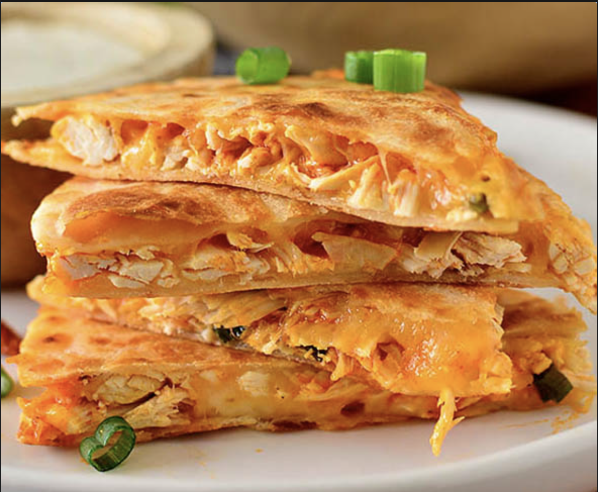

Buffalo Chicken Quesadilla

Description
The recipe for Buffalo Chicken Quesadillas is super super simple.
Mix shredded chicken with buffalo wing sauce for spice, chopped green onions for zip,
then layer with shredded cheese between two gluten free tortillas. Brown, flip, BOOM. Time to eat!
Ingredients
- Tortillas of choice
- 1 lb Shredded Chicken
- Franks Buffalo wing sauce or sauce of choice
- Chopped Green Onions
- Shredded Mexican Cheese Blend
- Ranch Dressing, for dipping
Steps
- Add shredded chicken to a bowl with chopped green onions and your desired amount of buffalo wing sauce. Stir to combine.
- Heat a flat griddle or skillet over medium heat then spray with nonstick spray.
- Place a tortilla onto the skillet then sprinkle on a layer of cheese followed by the shredded chicken mixture.
- Sprinkle on another layer of cheese then place another tortilla on top.
- Once the tortilla on the bottom has browned, flip then continue cooking until the second tortilla has browned.
- Remove quesadilla to a cutting board or cooling rack then let cool for 5 minutes before slicing into wedges.
- Serve with ranch dressing for dipping.